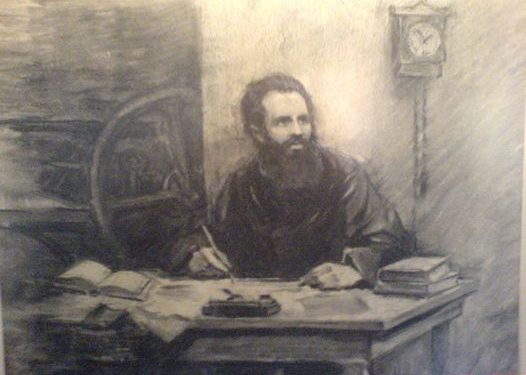

Любен Стойчев Каравелов (1834 – 21 януари 1879) е български поет, писател, енциклопедист, журналист,
етнограф; национален герой, борец за освобождението на България от османска власт. По-големият брат на
влиятелния следосвобожденски политик Петко Каравелов
Любен Каравелов е роден на 7 ноември 1834 или 1835 година (според други източници 1837) в град
Копривщица в семейството на заможния бегликчия Стойчо Каравела.
Каравелов учи първоначално в килийно училище при поп Никита Вапцилката, а по-късно в
училището на Христо Пулеков по взаимоучителния метод (1841 – 1846). След откриването на
първото българско класно училище от Найден Геров в Копривщица през 1846 г., Каравелов
става ученик на Геров (до 1850 година), където изучава българска история, физика, геометрия,
география и др. предмети.

След раздялата си с Ботев, Каравелов подновява изпращането на кореспонденции в руски
вестници. Участва в създаването на „Югославския просветен благотворителен комитет“, след
обявената на 12 април 1877 година война на Османската империя от страна на Русия. Завръща се
в България в услуга на руските войски. През февруари посещава Сан Стефано. Среща се с граф
Николай Игнатиев и заедно със свитата му посещават град Цариград.
Установява се в Русе, но здравословното му състояние се влошава. Умира на 21 януари 1879
година от туберкулоза. Погребан е тържествено от българската общественост, от представители
на руската власт и на други славянски народи